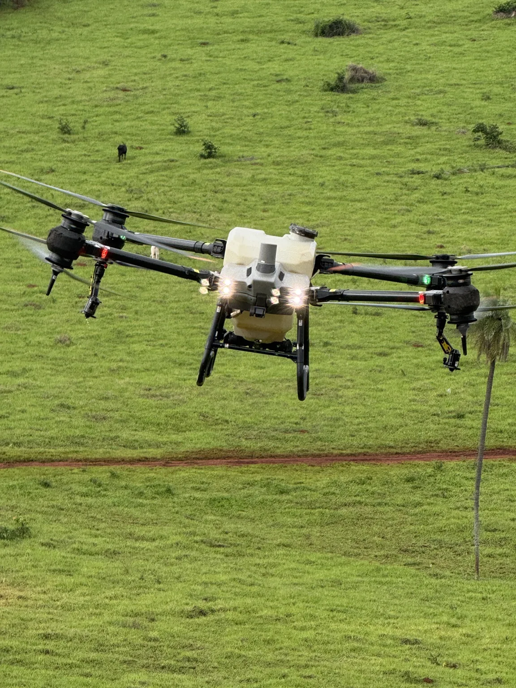

Pulverização agrícola
Aplicação de herbicidas, fungicidas e inseticidas conforme avaliação e orientação agronômica.
- Manejo de plantas daninhas
- Manejo de pragas e doenças
- Áreas agrícolas, pastagens e florestas
Aplicações agrícolas e distribuição de sementes com drones. Conte com a Ordone para avaliar sua área e planejar a operação.
Já tem uma data? Consulte a disponibilidade →
O serviço, o insumo e o equipamento são avaliados em conjunto, considerando a cultura, o terreno e o objetivo do manejo.
Aplicação de herbicidas, fungicidas e inseticidas conforme avaliação e orientação agronômica.
Aplicação de fertilizantes foliares e outros insumos compatíveis com a operação e com o equipamento.
Distribuição de sementes para pastagens, cobertura vegetal e recuperação de áreas degradadas.
Execução condicionada ao distribuidor disponível e às características do material.
Avaliar distribuição →Produtores rurais · Usinas · Cooperativas · Empresas florestais · Mineradoras · Órgãos públicos
Cada operação depende da avaliação agronômica, das condições da área e do clima, da disponibilidade de equipe e equipamento e dos requisitos aplicáveis.
Informe município, área, cultura, serviço e prazo desejado.
Envie o KML/KMZ, fotos ou uma descrição pelo WhatsApp.
Avaliamos viabilidade, mobilização, escopo e disponibilidade.
Alinhamos equipe, insumos, acesso, água e janela operacional.
Preencha o que já sabe. O site organiza a mensagem e você revisa e envia pelo WhatsApp.
Anexe seu KML/KMZ diretamente na conversa do WhatsApp depois de enviar a mensagem. Não há upload de arquivos neste formulário.
Acompanhe contratações verificadas e consulte separadamente as demandas que precisam de análise ou parceria operacional.